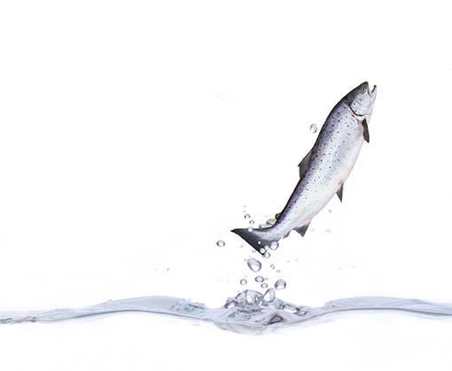

Дикий лосось
Лососёвые рождаются в реках, затем еще мальками уплывают в океан, где живут до наступления времени нереста. Лососи размножаются только в пресных водах – при этом рыбе важно вернуться именно в ту реку, где она родилась. Точно не известно, как лосось находит дорогу через океан. Гораздо важнее, что это рыбы, живущие в полной гармонии с природой, дающие и нам возможность получать силу водной стихии. Дикую рыбу, выловленную в самом удалённом крае России, доставляют на прилавки магазинов в замороженном виде – так она наилучшим образом сохраняет все свои полезные свойства.
Мясо лососевых богато Омегой-3 – натуральным антиоксидантом, замедляющими процессы старения и увеличивающим продолжительность жизни. Жирные кислоты питают клетки головного мозга, улучшая память и внимание. Кроме того, в мясе и икре рыбы содержатся необходимые микроэлементы – калий, фосфор, хром, и витаминами В1 и РР. Употребление лососёвых в пищу укрепляет иммунитет, ускоряет обмен веществ, снижает уровень холестерина в крови, является профилактикой сердечно-сосудистых заболеваний.
